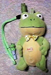
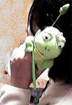
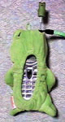
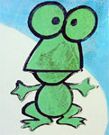
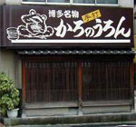

|
 ちょー機能的！カエル携帯ホルダ！ 【東京発=ケロッピー・セブン同志記者】いつものように秋葉原をパトロール中に新種のカエルを捕獲しました。写真のように携帯やPHSをすっぽり覆うファンシーカエルグッズです。デベソがついていましたが、おカエル様のお腹には似つかわしくないので除去手術をしました。電話をかけている最中は写真のようにおカエル様が耳元で愛嬌を振りまく優れものです。
 【全国かえる奉賛会】非機能的な携帯ホルダがちまたに溢れている中！とっても機能的なカエル携帯ホルダーが販売されていたとは。なにしろカエルの体内に、携帯が入っているので、出たくない相手とか、迷惑メールとかを気にしないで、自分が電話を使いたい時だけに、カエルさまの中から携帯を取り出すことができるという優れものだ。着信したら、即座に携帯を取り出すあさましいガツガツした所作でなはく、着信音の２０回くらいなってから、おもむろに出るのが優雅な携帯電話生活というもの。忘れられた邸宅玄関設置電話の気分を、思い起こすには、この素晴らしい携帯ホルダを使うしかないのであろう！
しかもであるーっ。電話しているときに目玉が外部に向いているのでとってもラブリー。気ぜわしい年末年始には、この携帯ホルダーから、さっそうとお得意さまに電話をすれば、営業マンも取引先の信用がぐっとあがること請け合いだよーっ！

ごみにまみれてせっせと働く感心カエル発見！ 【福岡発すみ様】 週末に甘木に紅葉を見に行って、カエル看板を見つけました。もしかして知ってるかも。いちおう写真送ります。ちょっと汚れているカエルくん可愛くないですか。
【全国かえる奉賛会】このカエル君が汚れているのは、せっせとゴミを拾い働いたからなのである。みんなもドライブの途中に、ゴミを見つけたら、どんどんくるまに積み込んで、カエルの手伝いをしようではないかああああああ。甘木市のカエルは、このように汚れているんですが、けなげでいいよねー！
大王メルアドのカエル由来を発見！ 【福岡発ＭＩＳＴＡＫＥＲ様】大王様の情報網からして抜けはないかと思うとですが、「もしやしての大きなお世話メール」をさせてもらっとります。ご掌握済みのことやったら、ご容赦であります「かろのうろんや」の看板蛙の由来。お店に直に確認したわけやないとですが、たぶんに以下の「唄」によるものと推測しとります。明治時代の相生券番の芸者衆による座敷唄「博多ことば」に以下のような一節があります。
博多ことばで可笑しかもんな
［意味］ 【全国かえる奉賛会】ぴんぽおおおおおおん！当たりい。永年の謎とされていた、大王のメルアドの由来を発見するとは、さすがに博多のもんばああああーい。わくろ、は博多弁で、ひきがえるのことなんだよねー。 カエルサボテンの生産開始！【ケロ天市場】毎回発売と同時に売り切れてしまう、カエルサボテンの年末バージョンの生産が着々と進んでいます。生産が完了したらけろテン市場で、発売するねーっ。なんでも新作は、カワノナミさん手製の、『かえるサボテン専用の手編みマフラー』付きらしいのであるーっ
投稿採用者に武功カエル徽章を授与！ |
||||||||||||||||||||||||||||||

かえる古新聞過去に取り上げた記事を見出し付きで一覧したい人は、ここをクリック◆創刊号を見る◆先週号を見る◆話題の号を見る◆かえる新聞の昔を読む◆COOL NET FROG RANKING !
 ホームページ大王の投票場所
ホームページ大王の投票場所
|
私も入っています。。全国かえる奉賛会
大王様に会うには、このバナーをクリック。ずっと奥に写真館があるぞ。全国かえる奉賛会に入会するには、自分のホームページのどこかに、下の部分を追加するとバナーがリンク付きで表示されるぞ。どんどん入会しましょー |


|